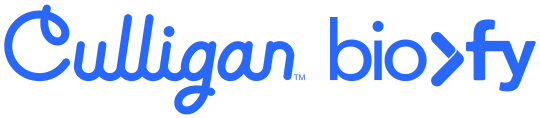

<!doctype html>
<html lang="es">
<head>
<meta charset="utf-8">
<meta name="viewport" content="width=device-width,initial-scale=1,viewport-fit=cover">
<meta name="robots" content="noindex,nofollow">
<link rel="manifest" href="manifest.webmanifest">
<link rel="apple-touch-icon" href="comun/marca/icono-180.png">
<meta name="apple-mobile-web-app-capable" content="yes">
<meta name="apple-mobile-web-app-title" content="Biofy Hub">
<meta name="theme-color" content="#2968fe">
<title>Biofy Hub</title>
<link rel="icon" href="data:image/svg+xml,%3Csvg xmlns=%27http://www.w3.org/2000/svg%27 viewBox=%270 0 64 64%27%3E%3Crect width=%2764%27 height=%2764%27 rx=%2716%27 fill=%27%232968fe%27/%3E%3Cg fill=%27none%27 stroke=%27white%27 stroke-width=%274%27%3E%3Crect x=%2715%27 y=%2715%27 width=%2713%27 height=%2713%27 rx=%273%27/%3E%3Crect x=%2736%27 y=%2715%27 width=%2713%27 height=%2713%27 rx=%273%27/%3E%3Crect x=%2715%27 y=%2736%27 width=%2713%27 height=%2713%27 rx=%273%27/%3E%3Crect x=%2736%27 y=%2736%27 width=%2713%27 height=%2713%27 rx=%273%27/%3E%3C/g%3E%3C/svg%3E">
<link rel="preconnect" href="https://fonts.googleapis.com"><link rel="preconnect" href="https://fonts.gstatic.com" crossorigin>
<link href="https://fonts.googleapis.com/css2?family=Montserrat:wght@400;500;600;700;800&display=swap" rel="stylesheet">
<link rel="stylesheet" href="comun/estilo.css?v=mww20rxa">
<script src="comun/config.js?v=mww20rxa"></script>
<script src="comun/nucleo.js?v=mww20rxa"></script>
</head>
<body>
<div id="app"></div>
<script>
(function () {
  const app = document.getElementById('app'), { icono, esc } = Hub;

  /* ---------- Entrada ---------- */
  function pantallaEntrada() {
    app.innerHTML = `<div id="entrada">
      <button class="btn-ic theme" type="button" aria-label="Cambiar modo claro u oscuro">${icono('luna','moon')}${icono('sol','sun')}</button>
      <div class="card entrada-card">
        <div class="lb"><span class="etiqueta">${icono('hub')}Hub</span></div>
        <h1>Bienvenido al Hub</h1>
        <p>Todas nuestras herramientas en un solo sitio. Entra con tu usuario y tu contraseña.</p>
        <form id="f"><input class="campo" id="us" type="text" placeholder="Tu usuario" autocomplete="username" autocapitalize="none" autocorrect="off" spellcheck="false" aria-label="Usuario" style="margin-bottom:10px">
        <input class="campo" id="pw" type="password" placeholder="Tu contraseña" autocomplete="current-password" aria-label="Contraseña" required>
        <button class="btn" id="bt" type="submit">Entrar</button>
        <p class="error" id="err" role="alert"></p>
        <label class="recordar"><input type="checkbox" id="rec"> Recordar en este dispositivo</label></form>
      </div></div>`;
    app.querySelector('.theme').onclick = Hub.cambiaTema;
    const f = app.querySelector('#f'), bt = app.querySelector('#bt'), err = app.querySelector('#err'), pw = app.querySelector('#pw'), us = app.querySelector('#us');
    try { us.value = Hub.lee('usuario') || ''; } catch (e) {}
    (us.value ? pw : us).focus();   // al momento: con un retraso, lo que ya se estuviera escribiendo podía acabar en la otra casilla
    f.onsubmit = async e => {
      e.preventDefault();
      bt.disabled = true; bt.textContent = 'Comprobando…'; err.textContent = '';
      const ok = await Hub.entrar(us.value, pw.value, app.querySelector('#rec').checked);
      bt.disabled = false; bt.textContent = 'Entrar';
      if (!ok) { err.textContent = us.value.trim() ? 'Usuario o contraseña incorrectos' : 'Contraseña incorrecta (si ya tienes usuario, escríbelo)'; f.classList.remove('sacude'); void f.offsetWidth; f.classList.add('sacude'); pw.select(); return; }
      pw.value = ''; Hub.guarda('usuario', us.value.trim() || null);
      inicio();
    };
  }
  // Quien solo tiene un módulo (la TV) va directo a él.
  function inicio() {
    const mods = Hub.misModulos();
    if (mods.length === 1) location.replace(Hub.href(mods[0])); else portada();
  }

  /* ---------- Portada ---------- */
  function saludo() { const h = new Date().getHours(); return h < 14 ? 'Buenos días' : h < 21 ? 'Buenas tardes' : 'Buenas noches'; }
  function etapas(m) {
    const i = HUB_ETAPAS.indexOf(m.etapa);
    return `<span class="etapas" title="Etapa: ${esc(m.etapa)}">${HUB_ETAPAS.slice(0, 4).map((_, k) => `<i class="${k <= i ? 'on' : ''}"></i>`).join('')}<em>${esc(m.etapa)}</em></span>`;
  }
  function tarjeta(m, n) {
    const uso = m.estado === 'uso';
    return `<a class="card mod ${uso ? '' : 'en-obra'}" href="${Hub.href(m)}" style="animation-delay:${n * 55}ms">
      <div class="cab"><div class="ic">${icono(m.icono)}</div><span class="estado ${uso ? 'uso' : 'obra'}">${uso ? 'En uso' : 'En construcción'}</span></div>
      <div><h3>${esc(m.nombre)}</h3><p>${esc(m.desc)}</p></div>
      <div class="pie">${etapas(m)}<span class="ir" ${m.fuera ? 'title="De momento se abre en su web de siempre"' : ''}>${uso || m.fuera ? 'Abrir' : 'Ver'}${icono(m.fuera ? 'fuera' : 'flecha')}</span></div></a>`;
  }
  function portada() {
    app.innerHTML = '';
    Hub.cabecera('Hub', 'hub');
    const s = Hub.sesion(), mods = Hub.misModulos();
    const fecha = new Date().toLocaleDateString('es-ES', { weekday: 'long', day: 'numeric', month: 'long' });
    let n = 0;
    const grupos = HUB_GRUPOS.map(g => {
      const ms = mods.filter(m => m.grupo === g.id); if (!ms.length) return '';
      return `<section class="grupo"><h2>${esc(g.nombre)}</h2><div class="rejilla">${ms.map(m => tarjeta(m, n++)).join('')}</div></section>`;
    }).join('');
    const main = document.createElement('main');
    main.className = 'wrap';
    main.innerHTML = `<div class="hola"><div><h1>${saludo()}, ${esc(s.nombre)}</h1><p>${esc(fecha.charAt(0).toUpperCase() + fecha.slice(1))} · Todo lo de Culligan Biofy en un solo sitio</p></div>${Hub.esMovil() && !Hub.instalado() ? `<button class="btn" type="button" id="instalar" style="width:auto;padding:0 18px;margin:0;display:inline-flex;align-items:center;gap:8px">${icono('hub')}Añadir a la pantalla de inicio</button>` : ''}</div>
      ${grupos}
      <footer>Biofy Hub · Culligan Biofy</footer>`;
    app.appendChild(main);
    const bi = main.querySelector('#instalar'); if (bi) bi.onclick = Hub.anadirInicio;
  }

  Hub.listo.then(() => Hub.sesion() ? inicio() : pantallaEntrada());
})();
</script>
</body>
</html>
